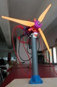
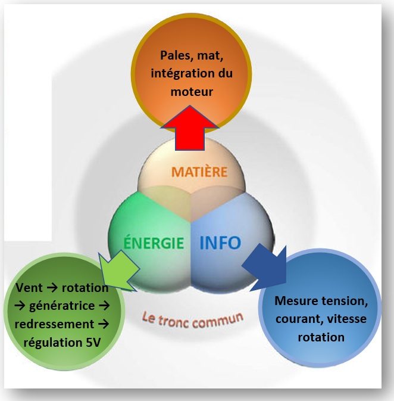

Objectif : Comment concevoir et réaliser une éolienne low-tech capable de convertir l’énergie cinétique du vent en énergie électrique exploitable (5V USB), en optimisant le rendement tout en respectant des contraintes de simplicité, coût réduit et impact environnemental minimal ?


Monsieur Pierre DUPONT est propriétaire d’une maison de campagne et il souhaite l’équiper d’une éolienne bon marché.
Réaliser l’éolienne avec du matériels de récupération.
L'objectif est de réaliser une éolienne fonctionnelle avec du matériel de récupération et de tester son bon fonctionnement.
En groupe (commun à toutes les parties) :
Elaborer un cahier des charges avec les divers éléments en votre possession.
Carte mentale
Diagramme SysML
Vidéo de présentation du projet complet.
Réaliser une présentation de votre projet sous un format de 2 minutes de manière dynamique. (Depuis les croquis jusqu’au prototype en passant par la modélisation et test).
Soutenance orale.
A la fin du projet vous passerez une soutenance orale de 5 minutes. Vous présenterez votre démarche et une démonstration du fonctionnement de votre système.
➢ Réaliser les pales et l’accouplement moteur
➢ Réaliser la partie conversion électromécanique et régulation de tension
➢ Réaliser la structure permettant d’accueillir la partie tournante et régulation de tension
Matériel du fablab.
Divers petits matériels
Résistance, diode, etc……
Manuelle
Impression 3D
https://wiki.lowtechlab.org/wiki/L%27%C3%A9olienne
Différents fichiers PDF